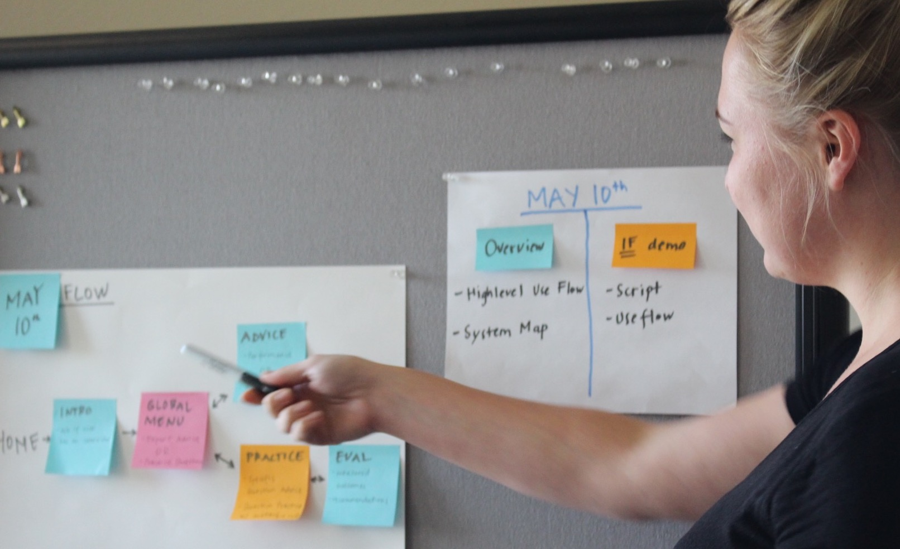
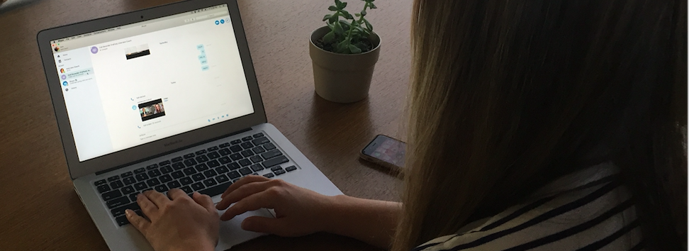

Helping candidates prepare for job interviews through advice and practice
Overview
Skype was interested in developing an experience that helps users prepare and practice for job interviews using the Skype Bot Framework.
Role
UX / UI Designer and UX Researcher
Team
I collaborated with a content writer, project manager and two developers at Botanic
Deliverables
Research
User Flows
Wireframes
Usability Testing
The Challenge
We wanted to create an experience that would replicate the invaluable benefits of working with a career coach to prepare for job interviews. We had to think of innovative ways that the bot could help users while working with realistic technical limitations.
The Solution
A multimodal bot, Andi, who helps users prepare for job interviews by providing expert advice, interview practice and evaluation.
Process
Research
We started the process with a round of research to ensure that we were designing the bot with a thorough understanding of the competitive landscape and the users’ needs. For this project, I interviewed:
• Users - those who will potentially benefit from interview practice with the Skype bot.
• Helpers - those who we would model the bot on, people who help others prepare for job interviews.
• Hiring Managers - those whose experience and advice would help inform the content and focus of the bot.
By speaking to these three groups, we intended on learning how to help candidates prepare for job interviews, what their pain points tend to be, and what hiring managers are looking for in an ideal candidate. The insights gathered from the research participants were invaluable for determining the UI direction, the structure of the conversational design, and the bot content.
Strategy

In order to determine the structure of the bot, I worked closely with our PM and content writer to collaborate on user flows, information architecture, and the conversational directions for the bot. I also worked closely with the developers in pinpointing realistic features and capabilities.
“Practice interviewing out loud. Ideally with another person, but just saying it out loud really helps.” (Katie, Hiring Manager)
The high level user flow below was created to communicate with the client on the overall direction for Build. Once approved, it gave us the structure necessary to begin incorporating content and building out more complicated, intricate flows (see examples here). It was also a helpful tool for avoiding feature creep and served frequently as a foundation for re-establishing the alignment on our goals.
Ideation
At this point, I also began brainstorming directions for UI. After discussing the technical capabilities and limitations of the existing Skype UI with our developers, I created wireframes to help illustrate the multimodal nature of the bot.
The user would interact with the bot (and the system) in four different ways:
• Text: Used as often as possible to create the feeling of a natural chat conversation.
• Button Card: Used when necessary to aid the user by giving specific button options.
• Calling Card: Used when the user has agreed to call the avatar to practice answering an interview question.
• Full-Screen Video: Used to display the avatar asking a question and recording while the user is answering.
After these deliverables were approved, the team and I proceeded to flush out the personality/visual appearance of the avatar and more intricate conversation flows.
Iteration
“I think this is totally useful, it could be really helpful especially if you can incorporate technical questions.” (Sam, Usability Testing Participant)
The final step before Build was for me to conduct usability and bug testing to ensure the bot was running as smoothly as possible. With the UI, content and visual design in place, I encouraged participants to play around with the bot so I could establish pain points in the flows, note any confusing content, and gather insights based on their experiences. The feedback I received helped us make some last minute content changes, but more importantly, reinforced that the bot was generally user-friendly and has a viable market.

Results
Our engagement with Skype was an excellent opportunity for me to work on all parts of the UX of bot and avatar design. Working closely with the team at Botanic, we were able to think through a lot of challenging problems and create an engaging, useful experience.
From the business side, we succeeded in highlighting the growing tech capabilities of the Skype bot platform (the project was even mentioned in VentureBeat). The demo at Build got positive feedback, and the client has expressed interest in continuing work on Andi for an official launch and working with Botanic on more projects in the near future.


{kind=link}